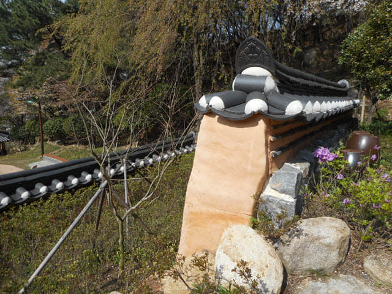
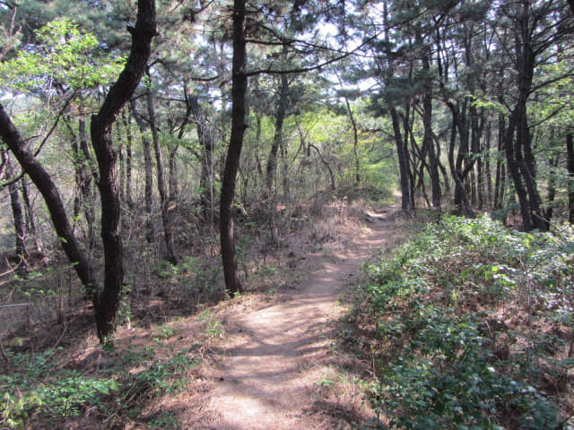

從正門進入釜山沙上近鄰公園, 順著步道遊覽了沿山坡而建的溫馨花園區、圖片區、草藥園區, 迷你荷蘭花園區、韓國花園區、迷你法式花園區。抬頭望望, 山坡上便是日本庭園區, 已經差不多來到公園範圍最高的地方。
這些褲子藝術品夠創意啦! 有時創意真是不必太複雜。
哈哈~~ 上樓梯的褲子。

越走越高, 可以俯瞰山下釜山市區景色。
迷你日本花園 (미니 일본정원)
沿樓梯繼續往上走, 來到迷你日本庭園區, 差不多是公園範圍最高的地方。

再往上走應該是公園最高處的天堂花園和思想觀察台。
既然來到, 而且還有時間, 當然要走上去看看啦! 從方向來看, 估計上面可以更清楚俯瞰釜山市區景色。
不一會便來到山頂, 接著都是松林間迂迴小路, 松林十分茂盛, 完全看不到山下的景色。

估計這些小徑應該是給晨運客使用的。
沿山頂上的小徑走了一會, 看不見天堂花園和思想觀察台, 不想四處繼續找, 也恐怕迷路, 如果在這時迷路便麻煩了! 隨時趕不及往機場, 太冒險了! 便循原路返回迷你日本花園, 而釜山沙上近鄰公園這行程就到此為止吧! 是時候離開公園, 步行返回酒店, 開始踏上歸途了!